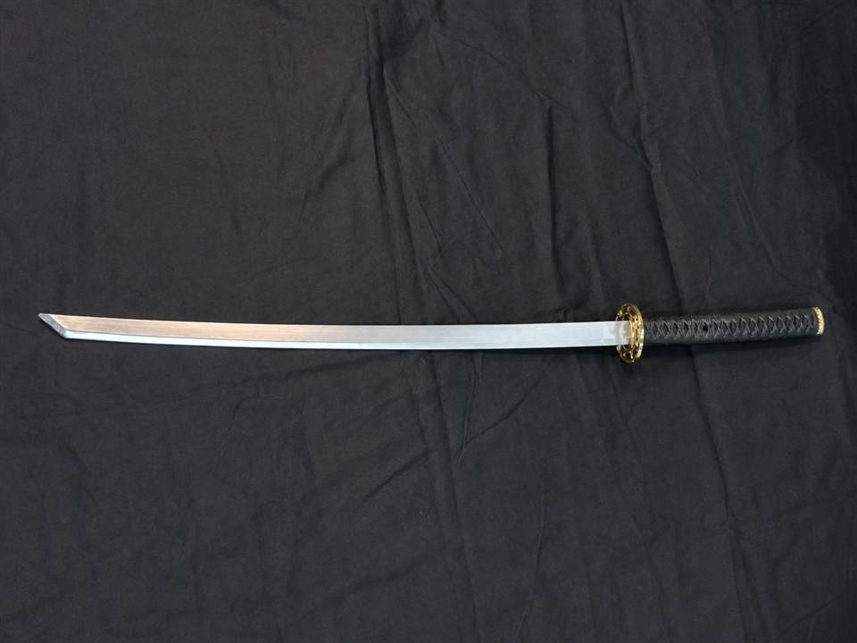

PR-010 / PROPS
舞台用模造刀
黒い柄と金色の鍔を備えた舞台演出用の模造刀です。時代劇、殺陣の構え、展示などに使用できます。安全な演出計画と管理者の立ち会いを前提に貸し出します。
名称・仕様・料金は確認中です。写真は実物をもとに明るさ・色味・傾きを補正しています。
仕様・サイズ
- 全長
- 確認中（寸法写真あり）
- カラー
- シルバー・ブラック・ゴールド
- 用途
- 舞台・撮影・展示演出
- 種別
- 演出用模造品
ご利用上の注意
- 人や物への接触、投擲、無管理での持ち出しは禁止です。
- 使用方法・会場規定・安全管理体制を事前に確認します。
在庫状況、数量、利用日程、受け渡し方法を確認後に正式なお見積もりをご案内します。
← 機材一覧へ戻るRENTAL INQUIRY
在庫・日程を確認します。
数量や会場条件もあわせてお知らせください。
お問い合わせへ